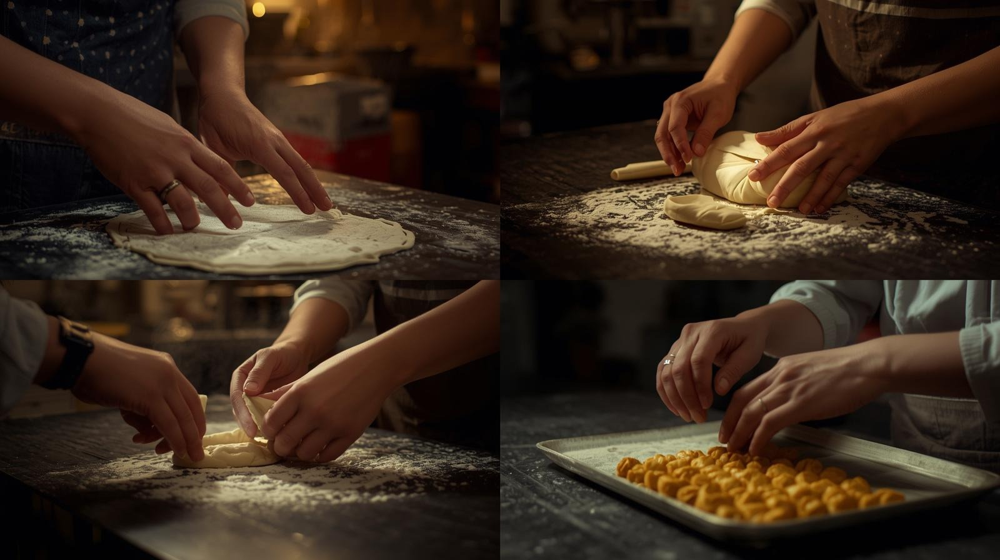

Anne eli değen gerçek Erzurum lezzetleri.
Miss Mutfağım'da her mantı tek tek kapatılır, her yufka özenle elde açılır. Erzurum'un köklü lezzet kültürünü en seçkin haliyle sofranıza getiriyoruz.

Elde, günlük, taze üretimErzurum'un soğuk kışlarında pişen sıcak hatıralar
Miss Mutfağım, Erzurum mutfağının inceliklerini ve aslına uygun lezzetlerini koruyarak mutfağınıza taşımak amacıyla kuruldu. Mantımızın küçüklüğü, ketemizin kat kat ayrılan nefis dokusu işte bu değişmeyen bağlılığın birer eseridir.
Katkı maddesi kullanmadan, zamana büyük bir sabır harcayarak hamurumuzu hazırlıyor, her bir siparişi kendi evimize hazırlar gibi titizlikle paketliyoruz.
Neden Biz?
Bizim için bir tabak hamur işi sadece bir yemek değil; bir aile sofrası, sıcak bir paylaşımdır. Erzurum'un yöresel mirasını sofranızda yaşatmak için buradayız.
Vizyonumuz & Misyonumuz
Vizyonumuz
Erzurum'un kadim mutfak mirasını, aslına en sadık haliyle koruyarak gelecek nesillere ve şehir dışındaki sofralara taşıyan; el emeğini maharetli kadınlarımız tarafından ustaca hazırlamak, Erzurum denince akla ilk gelen güvenilir ev mutfağı olmak.
Misyonumuz
Her siparişi kendi ailemize hazırlar gibi, katkı maddesi kullanmadan, günlük ve taze üretmek; hamurdan iç harca kadar her aşamayı elde, sabırla ve özenle tamamlayarak müşterilerimize gerçek bir Erzurum sofrası deneyimi sunmak.
Miss Mutfağım Ürünleri
Sipariş üzerine tamamen taze, katkısız ve geleneksel yöntemlerle hazırlanan asıl ürün grubumuz.
Galeri & Yorumlar
Fotoğraflar yakında burada — Instagram'dan günlük üretimimizi takip edebilir ve sofralarımızdan yankılara göz atabilirsiniz.
Erzurum'un En Meşhur 25 Yemeği
Cağ kebabından kadayıf dolmasına, hıngelden aşotu çorbasına — meraklısına özel, dilediğiniz an açabileceğiniz küçük bir tarif arşivi.
Kadim Şehir Erzurum
İpek Yolu'nun kalbinde, tarihin ve lezzetin harmanlandığı zirve şehir. Merak edenler için, şehri tanıyan on duraklık kısa bir gezi.
Sıkça Sorulan Sorular
Erzurum mantısı ve diğer ürünlerimiz hakkında en çok sorulan sorular.
Bizimle İletişime Geçin
Telefon & WhatsApp
Üretim Adresi
Yunusemre Mah. Tomurcuk Sok. No:3/A-1
Akpınar Apt, B Blok, 25080
Palandöken / Erzurum